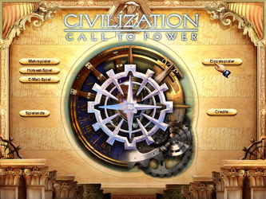
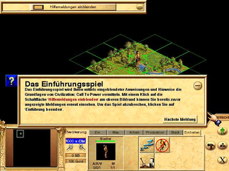

Civilization - Call to Power
Dieser Artikel wurde für die folgenden Ubuntu-Versionen getestet:
Ubuntu 16.04 Xenial Xerus
Zum Verständnis dieses Artikels sind folgende Seiten hilfreich:
Bei "Civilization - Call to Power" (kurz: Civ CTP) handelt es sich um den dritten Teil der Civilization-Serie. Das Spiel startet im Jahr 4000 v. Chr.. Ziel ist es durch taktischen und stategisches Spiel, Erschaffung einer gut funktionierenden Wirtschafts- und Infrastruktur die eigene Zivilisation aus der Jungsteinzeit durch 7000 Jahre Zeitgeschichte in die Zukunft zu führen und zur stärksten Zivilisation zu machen. Krieg, Diplomatie, Forschung, Entwicklung, Wissenschaft, Technologie und Entscheidungen im wissenschaftlichen, politischen oder sozialen Bereich können über Sieg oder Niederlage entscheiden. Kolonien zu Lande, unter Wasser sowie im Weltraum, neue Einheiten, weitere Entwicklungsgebiete und neue Staatsformen sorgen für ein abwechslungsreiches Spielerlebnis. Verschiedene Spielmodi stehen zur Auswahl: Alleinherrschaft, Punktsieg und außerirdisches Leben.
|  |  |
| Menü | Spieleszene |
Installation¶
Zuerst benötigt man den aktuallisierten Installer [1] von liflg.org 
 oder holarse-linuxgaming.de . Diesen ausführbar [2] machen und die Installation des Spiels starten [3] [4]:
oder holarse-linuxgaming.de . Diesen ausführbar [2] machen und die Installation des Spiels starten [3] [4]:
./civ.ctp_1.2a-german_x86.mojo.run
Die Spieledateien werden nun im Ordner /usr/local/games/civ_ctp abgelegt und ein Menüeintrag unter "Anwendungen -> Spiele" vorgenommen. Das Spiel kann außerdem mittles civctp [4] gestartet werden.
Weitere Startparameter, die auch kombiniert genutzt werden können:
Startparameter¶
| Startoptionen | |
| Parameter | Beschreibung |
-w | Spiel startet im Fenstermodus. |
-s | Soundwiedergabe wird gestoppt. |
-h | weitere Optionen |
Probleme & Lösungen¶

Deinstallation¶
Um das Spiel zu entfernen die CD einlegen und die Datei install wie hier beschrieben ausführen. "Deinstallieren" anwählen.

Infobox¶
| Civilization - Call to Power | |
| Genre: | Strategie |
| Sprache: |     |
| Veröffentlichung: | 1999 |
| Publisher: | Activision / Loki |
| Systemvoraussetzungen: | > 133 MHz / 32 MB RAM / >= 400 MB freier Festplattenspeicher / CDROM / Grafikkarte >= 2 MB RAM |
| Medien: | CD (1) |
| Strichcode / EAN / GTIN: | 0689524122568 |
| Läuft mit: | nativ |
- Erstellt mit Inyoka
-
 2004 – 2017 ubuntuusers.de • Einige Rechte vorbehalten
2004 – 2017 ubuntuusers.de • Einige Rechte vorbehalten
Lizenz • Kontakt • Datenschutz • Impressum • Serverstatus -
Serverhousing gespendet von